Instalar Mint
Vamos a ver como instalar y configurar en nuestro equipo una de las distribuciones más pulares de Linux: Mint.
Descargar Linux Mint
El primer paso es hacernos con el dvd de instalación. Acudimos a la página web de Linux Mint:
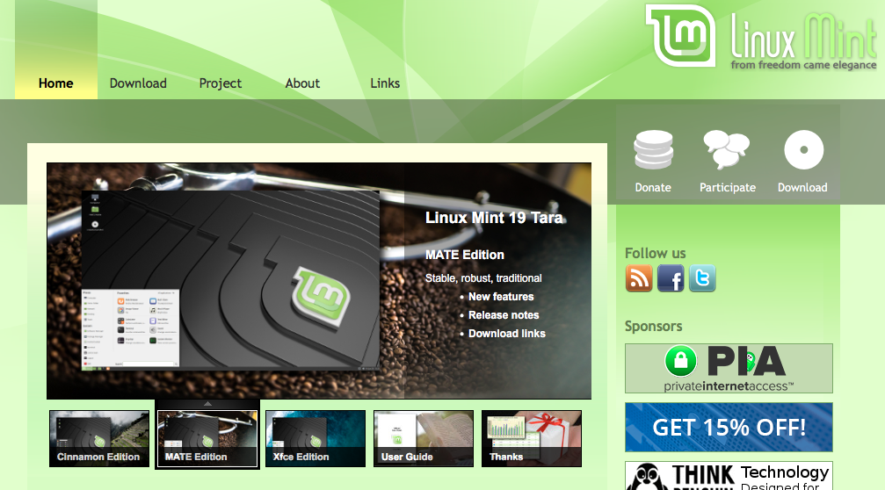
En la barra superior pulsamos en el enlace Download. En la página que se muestra a continuación tenemos varios enlaces de descarga, dependiendo de la versión seleccionada:
-
nuestro escritorio preferido: Cinnamon, MATE o Xfce.
-
la arquitectura de nuestro equipo: 32 o 64 bits.
Al pulsar sobre la opción deseada, aparece una página de descargas donde debemos seleccionr un servidor “mirror” desde donde bajarnos el dvd de Mint. Previamente pulsaremos en el enlace Announcement para consultar los requisitos mínimos que debe tener nuestra máquina.
En el anuncio del lanzamiento de la versión buscamos el apartado System requirements:
System requirements:
1GB RAM (2GB recommended for a comfortable usage). 15GB of disk space (20GB recommended). 1024×768 resolution (on lower resolutions, press ALT to drag windows with the mouse if they don’t fit in the screen).
El resultado de la descarga es un archivo .iso que consiste es una imagen del DVD de instalación. Con ese archivo tenemos tres opciones:
-
según cual sea nuestro sistema operativo actual, utilizar alguna herramienta para grabar un disco DVD. ¡Atención! No se trata de que copiemos este fichero
.isoal DVD, sino que hagamos una grabación pista a pista del disco tomando como imagen el contenido del archivo. -
en lugar de un DVD, crear una unidad USB de arranque.
-
en mi caso utilizo una máquina virtual con la ayuda de un software llamado VirtualBox y uso el archivo descargado como DVD virtual, sin necesidad de grabarlo en ningún sitio.
Iniciando una sesión Live
Una vez que contamos con un dvd de instalación (o unidad USB), lo insertaremos en la unidad lectora. Si se trata de una máquina virtual, configuramos el archivo .iso como dvd virtual. Debemos asegurarnos de que nuestro ordenador se pone en marcha cargando el sistema operativo a partir del DVD (o el USB en su caso) con prioridad sobre el disco duro. Si no es así, el disco insertado no tendrá efecto.
Podemos configurar el orden de los dispositivos en el arranque de la máquina. Dependiendo del fabricante, al encenderla suele aparecer el logotipo y un mensaje en una esquina de la pantalla indicando “Pulsar tecla XX para configurar arranque”. Nótese que si hacemos esto, generalmente iniciaremos un programa de configuración en formato de texto, donde el ratón no tiene efecto y tendremos que navegar por las opciones con la ayuda de las teclas de flechas y la tecla Intro.
Una vez comprobadas y ajustadass las prioridades de inicio, al encender el ordenador se detectará el DVD de instalación y se ejecutará el programa de arranque que hay en el mismo. El sistema operativo instalado en nuestro disco duro será ignorado, y se pondrá en marcha una sesión “Live” de Linux Mint.
Nota:
Las imágenes que se muestran a continuación corresponden a una sesión de Linux en máquina virtual. La barra superior de título es la correspondiente a la ventana que contiene la sesión virtual, y no pertenece al escritorio de linux.
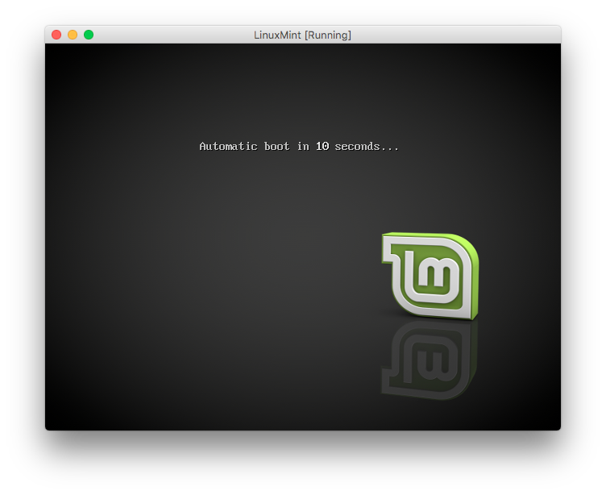
Si no pulsamos ninguna tecla, automáticamente se cargará el sistema operativo que hay en el DVD. Si por el contrario pulsamos una tecla antes de finalizar la cuenta atrás, se nos ofrecerán otras opciones. Seleccionarlas pulsando flecha arriba/abajo e Intro. En este caso, ejecutaremos “Start Linux Mint”.
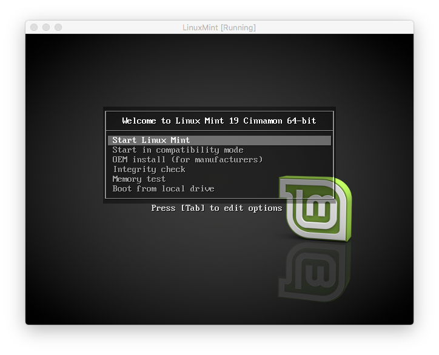
El mini sistema operativo que hay en el DVD tarda un poquito en cargarse:
Finalmente se visualiza el escritorio de la sesión “Live”:
En el escritorio hay tres iconos:
-
Computer: da acceso al explorador de ficheros. Similar a lo que haríamos en windows cuando pulsamos en el icono “Mi PC”.
-
Home: abre el explorador de archivos en la carpeta de documentos del usuario
-
Install Linux Mint: pone en marcha el proceso de instalación en el disco duro
Quizás lo primero sea explorar un poco. Podríamos ver, por ejemplo, si funciona el navegador web y conseguimos acceder a Internet. Pulsamos en la esquina inferior izquierda, en el icono verde de Mint para mostrar el menú de aplicaciones. Buscamos la entrada de Internet > Firefox web browser
Podemos apagar la máquina sin llegar a instalar nada en nuestro equipo. Para ello pulsamos en la barra inferior del escritorio. En los iconos de la derecha tenemos el de Usuario. En el menú desplegable seleccionamos la opción Power Off….
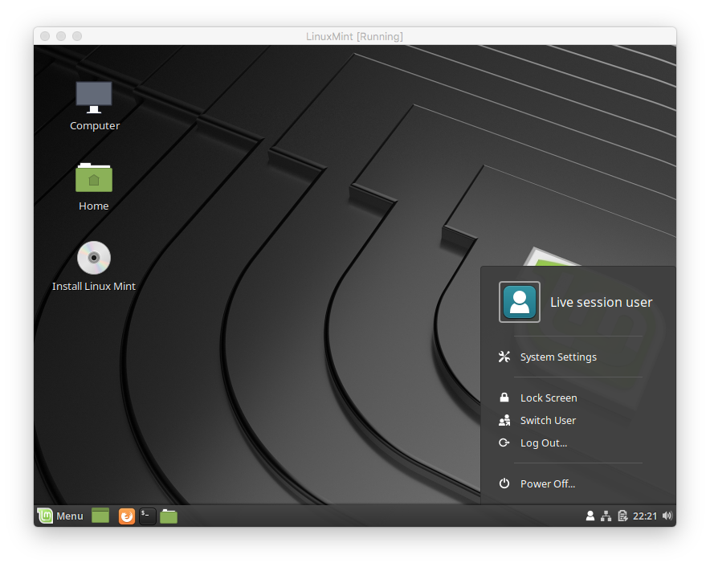
También tenemos esa opción en el menú general de programas pulsando en el icono de apagado en la esquina inferior izquierda:
Preparando la instalación
Antes de comenzar el proceso tenemos que planificar lo que vamos a hacer con nuestro disco duro. Tenemos varias opciones:
-
Descartar todo lo que hay allí, formatearlo e instalar el nuevo sistema operativo. Esta es la opción más simple. Perderemos todos los contenidos, pero si esa es nuestra elección… También podríamos respaldar nuestros documentos en alguna unidad externa para recuperarlos más adelante.
-
Dividir el disco duro en dos particiones, una para el sistema operativo y otra para los documentos, sin perder estos.
El primer paso es hacer una copia de seguridad, por si acaso. Seguidamente, hacemos uso de las utilidades de administración de discos de nuestro viejo sistema operativo para partir el disco en dos y mover los documentos de una partición a la otra.
Durante el proceso de instalación, borraremos la partición dedicada al sistema operativo e instalaremos allí el nuevo.
-
Como alternativa a lo anterior, podemos:
- hacer una copia de seguridad de los documentos
- reformatear todo el disco duro durante el proceso de instalación, haciendo dos particiones
- dejar una de las particiones ligada a la carpeta
/homede usuario - una vez instalado Linux, copiar de vuelta los documentos.
Esto tiene una ventaja sobre la opción anterior: la partición dedicada a documentos se puede formatear con el formato de linux en lugar de usar el de windows, por ejemplo.
-
Otra opción es utilizar las utilidades de administración de discos del sistema operativo viejo para particionar el disco en dos, creando la nueva partición vacía.
En esa partición vacía instalaremos Linux. De esta forma, mantendremos los dos sistemas operativos simultáneamente, uno en cada partición del disco duro, y cada uno con sus documentos.
Habrá que configurar el programa de arranque de la máquina sustituyéndolo por uno que, cada vez que encendamos el ordenador, nos pregunte cual es el sistema que queremos poner en marcha. El proceso de instalación de Linux puede instalar ese nuevo programa de arranque.
-
La opción anterior admite una variante: crear tres particiones, dejar el sistema operativo viejo en la primera, pasar los documentos a la segunda, e instalar Linux en la tercera.
De esta forma, desde ambos sistemas operativos podremos acceder a los mismos documentos, aunque el formato de la partición de documentos ha de ser el de windows, que no es capaz de acceder a formatos linux (a la inversa si se puede).
Una vez planificada la configuración del disco duro, podemos iniciar el proceso de instalación. Vamos a hacer lo siguiente:
-
si tenemos un ordenador portátil, asegurarnos que está conectado a la red eléctrica.
-
introducimos el DVD (o USB) de instalación y arrancamos la máquina. Se inicia una sesión “Live”.
-
comprobar que tenemos conexión a Internet.
-
pulsamos sobre el icono Install Linux Mint
Configurar la instalación
Al pulsar en el icono mencionado, se inicia un asistente para configurar el proceso. El primer paso es seleccionar el idioma. Seguidamente pulsamos en el botón continuar.
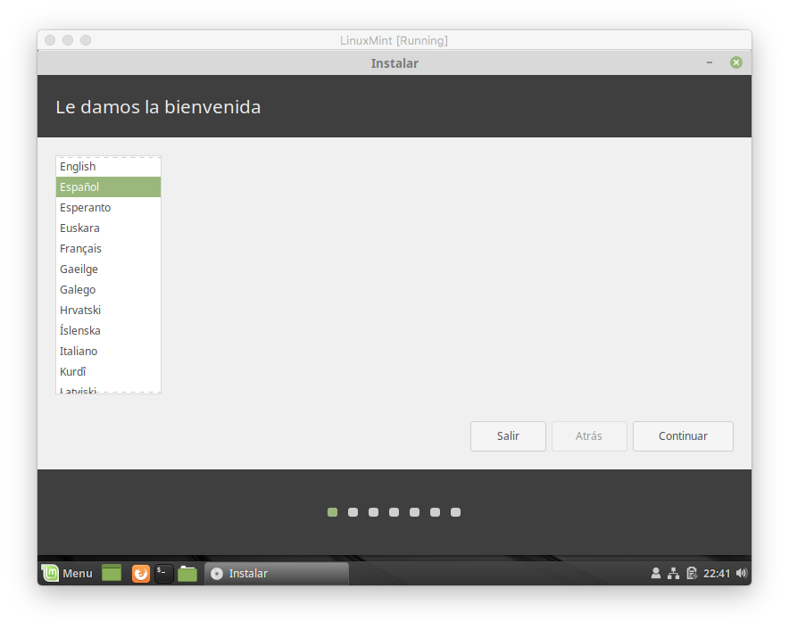
Seleccionar la disposición del teclado. Podemos comprobar que nuestra elección es la adecuada tecleando algo en el apartado habilitado para hacer pruebas. Intentar introducir caracteres raros: ñ, ç, }, @ …
El uso de cierto software está limitado a licencias de uso, y no se incluye en algunas distribuciones Linux. Mint pregunta si queremos instalar esos programas. Marcamos la casilla y pulsamos en continuar.
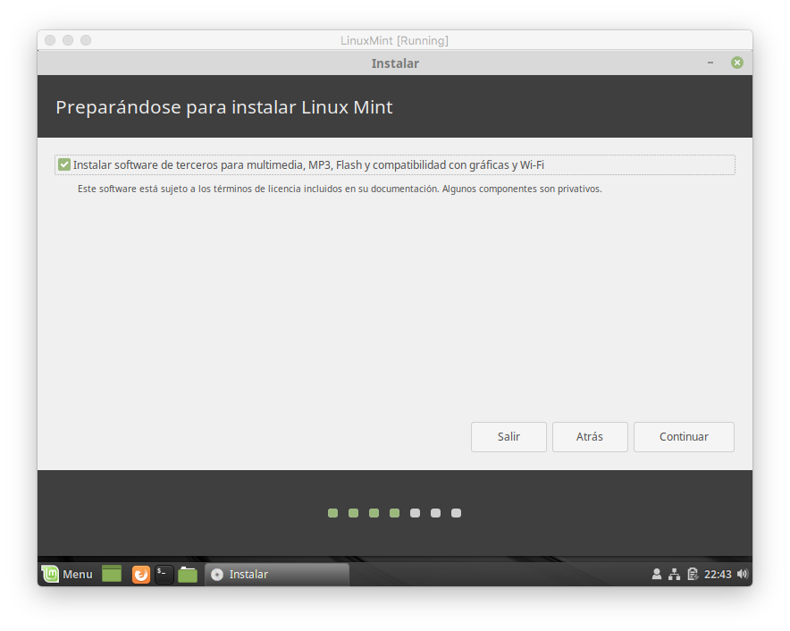
A continuación decidimos que vamos a hacer con el disco duro. Podemos utilizar todo el disco duro borrando el contenido anterior. En mi caso, como estoy utilizando una máquina virtual, selecciono esta opción de borrar todo el disco duro y utilizar el ordenador solo con el nuevo sistema operativo.
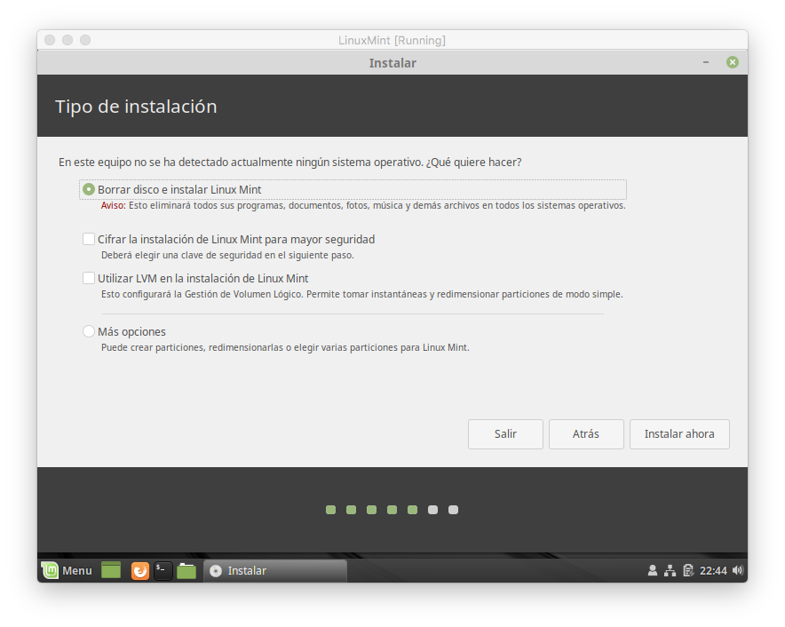
También podemos pulsar en el botón más opciones para configurar las particiones a nuestro gusto, con la posibilidad de mantener el viejo sistema operativo en otra partición, o crear una aparte para documentos. Vamos a examinemos esto:
-
Si queremos configurar nuestras particiones, se mostrará una ventana con la lista de unidades de almacenamiento:
Recordemos que en linux los dispositivos son accesibles a bajo nivel mediante archivos en el directorio
/dev. En este caso, los discos se denominansda,sdb,sdcy así sucesivamente. -
Lo que tenemos por ahora es un disco vacío. Vamos a crear particiones. Seleccionamos el disco y pulsamos en el botón
[nueva tabla de particiones].La creación de una nueva tabla de particiones en un disco supone suprimir todo su contenido. Se nos pide confirmación.
-
Seleccionando la tabla de particiones creada, pulsamos en el botón
[+]para crear una partición.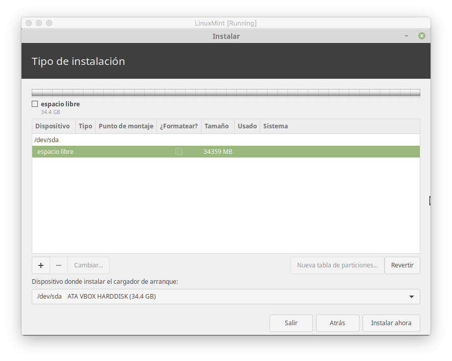
Introducimos las características de la partición a crear: tipo de formato, tipo de partición, tamaño y punto de montaje, es decir, directorio al que va ligada la partición. Típicamente crearemos una partición ligada al directorio raiz
/, y otra para archivos de usuario montada en el directorio/home.El desplegable “utilizar como” permite indicar el tipo de formateo de la partición. Los formatos ext2, ext3 y ext4 son típicos de linux, mientras que FAT16 y FAT32 son los de windows.
-
Seleccionando particiones, podemos suprimirlas pulsando en el botón
[-]o cambiar sus características pulsando en el botón[cambiar]. Seleccionando la entrada “espacio libre” podemos crear nuevas particiones.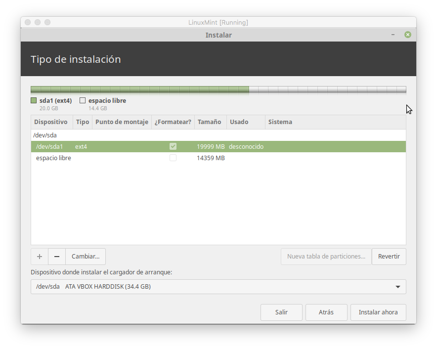
Nota:
No debemos preocuparnos por el borrado de particiones por ahora. Los cambios solo se materializarán cuando se inicie el proceso de instalación. Por ahora solo estamos configurando dicho proceso.
-
Si optamos por modificar una partición, podemos cambiar el formato y el punto de montaje en la estructura de directorios:
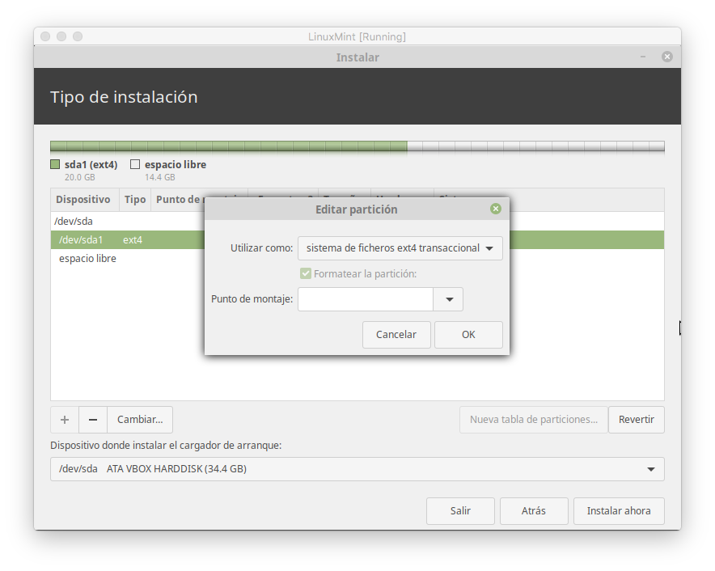
-
Finalmente pulsamos en el botón
[Instalar]para que se creen las particiones.
Antes de configurar las particiones, se nos pide confirmación:
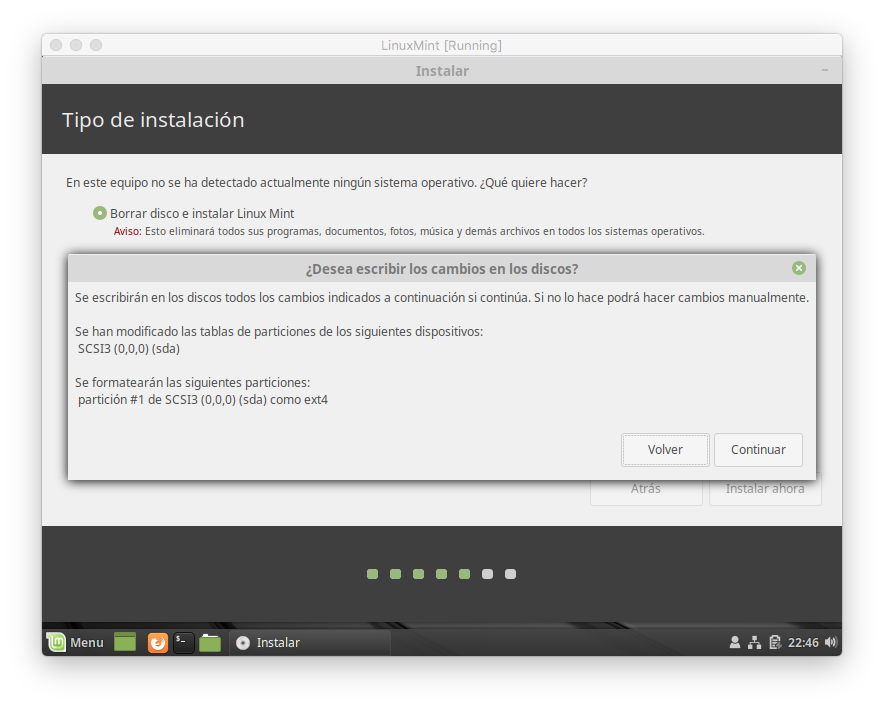
El proceso de instalación
Comienza el proceso. Lo primero es establecer nuestro huso horario:
A continuación introducimos un nombre de usuario, equipo y password. La opción Iniciar sesión automáticamente hace que no se nos pida la contraseña cada vez que encendemos el ordenador. Muchos usuarios prefieren desactivar esta opción por precaución.

Comienza el proceso de copiado de contenidos del DVD al disco duro, instalación y configuración. Es un proceso totalmente automático que puede llevar bastante tiempo. Mientras tanto, se muestra información sobre Mint.
Fin de la instalación. Extraemos el DVD y pulsamos sobre el botón reiniciar.
Apagando la máquina…